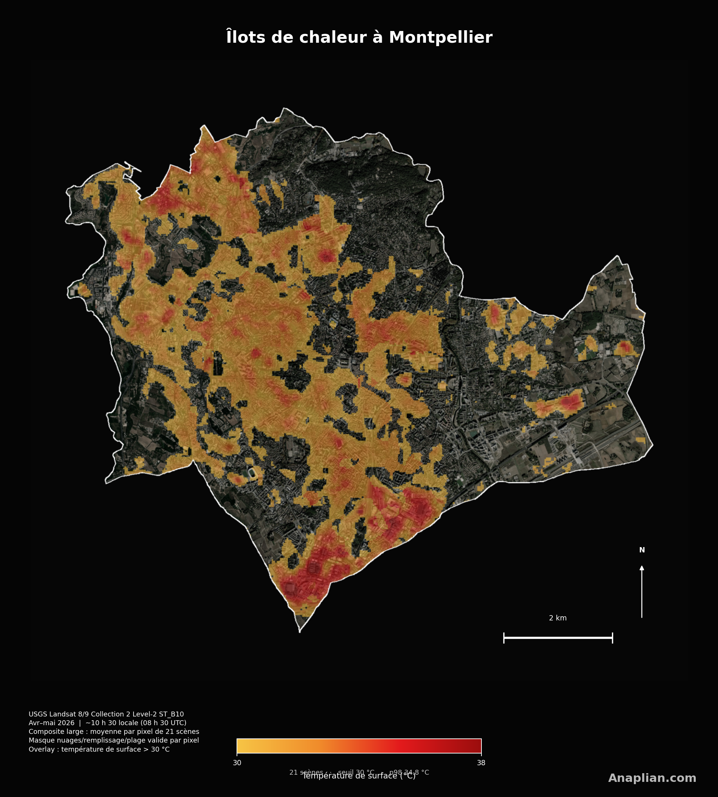
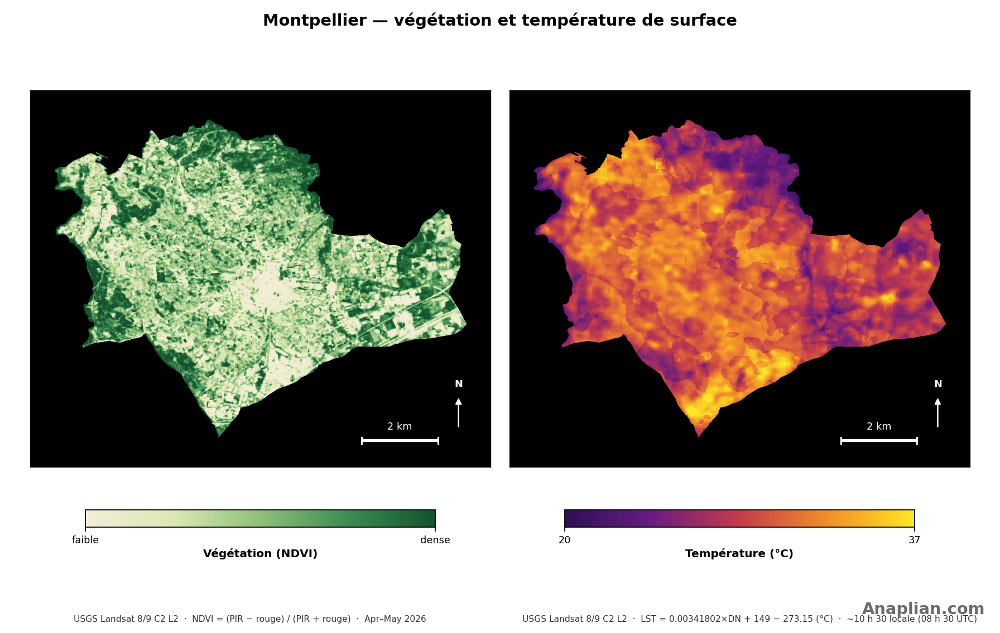

Pourquoi cette étude
La hausse de la température moyenne de la planète aggrave la vulnérabilité aux chaleurs excessives. Il ne s'agit pas seulement d'un degré de plus dans la moyenne globale : cette hausse pousse davantage de journées au-delà de seuils dangereux pour la santé, le travail en extérieur et les réseaux d'eau et d'énergie. En ville, le risque se concentre. L'asphalte, le béton, les toitures sombres et le métal absorbent une grande part du rayonnement solaire et le restituent en chaleur ; contrairement à un arbre ou un sol humide, ils n'évaporent presque pas d'eau et n'offrent pas d'ombre. Rues étroites et immeubles forment des canyons qui piègent l'air chaud. Le résultat : des îlots de chaleur — parkings, hangars, avenues et toitures où la surface atteint des températures que le corps ne tolère pas en exposition prolongée.
Avec Landsat 8 et Landsat 9, nous cartographions les surfaces les plus chaudes de Montpellier. La carte est la moyenne par pixel de 21 scènes d'avril et mai 2026, acquises vers 12 h 25, heure locale. Sur chaque pixel, nuages, ombres et valeurs invalides sont masqués avant de moyenner ; on ne jette pas la scène entière. Le capteur thermique — bande 10, entre 10,6 et 11,2 micromètres — estime la chaleur du sol, des toits et du bitume, pas celle de l'air à l'ombre. Seules les surfaces au-dessus de 30 °C sont coloriées. En parallèle, le NDVI montre où la végétation est dense. La température de la commune se compare à la moyenne des zones rurales dans un rayon de 20 km (garrigue, vignoble, hinterland de l'Hérault). Le 98e centile du composite atteint 34.8 °C en surface ; l'écart urbain–rural (SUHI) est de +5.6 °C.
Ces pics ne sont pas un épisode isolé : avec davantage de vagues de chaleur et de surfaces imperméables, ils tendent à s'aggraver. Ils servent à repérer des lieux d'intervention. L'urbanisme tactique permet de tester, en quelques semaines, des ombres temporaires, de la peinture à fort albédo dans les cours d'école ou les rues de jeu, et des trottoirs plus perméables. La végétation reste le levier le plus durable : un arbre intercepte le soleil et rafraîchit l'air par transpiration. Coulées vertes, toitures et murs végétalisés, préservation des parcs (Lez, Mosson, garrigue) réduisent la charge thermique. Toits et revêtements froids, désimperméabilisation et priorité aux personnes les plus exposées — personnes âgées, enfance, travail en extérieur — complètent le tableau. La donnée satellitaire ne remplace pas le projet local ; elle indique où agir d'abord.
À Montpellier, au printemps 2026, la température moyenne de surface de la commune est de 29.4 °C, contre 23.8 °C dans la ceinture rurale (+5.6 °C). Le 98e centile du composite est de 34.8 °C. Ce n'est pas la température de l'air : un toit ou un parking peut dépasser 40 °C quand l'air reste proche de 20 °C.
La commune, surfaces les plus chaudes

Végétation et chaleur, côte à côte

Comment c'est fait
Les cartes sont un composite large : la moyenne par pixel des 21 scènes Landsat 8 et Landsat 9 (Collection 2, niveau 2) acquises entre le 1er avril et le 31 mai 2026. On ne jette pas une scène entière pour cause de nuages : sur chaque pixel, le remplissage, les nuages, les ombres et les températures hors de la plage valide (0 à 80 °C) sont masqués, puis les observations utiles sont moyennées. Les satellites survolent l'Hérault vers 12 h 25, heure locale (près de 10 h 25 UTC). Ce qui est peint n'est pas l'air à l'ombre, mais la température de surface — toits, asphalte, sol nu et végétation — avec la bande 10 de l'infrarouge thermique (10,6 à 11,2 micromètres ; LST = 0,00341802 × DN + 149 − 273,15). En jaune à rouge, en semi-transparence sur l'image satellite, n'apparaissent que les surfaces au-dessus de 30 °C. Le verdure est mesuré par le NDVI (rouge et proche infrarouge). L'écart urbain–rural soustrait 23.8 °C, moyenne des classes rurales du GHSL 2020 (SMOD 11, 12 et 13, hors eau) dans un rayon de 20 km autour de la commune.